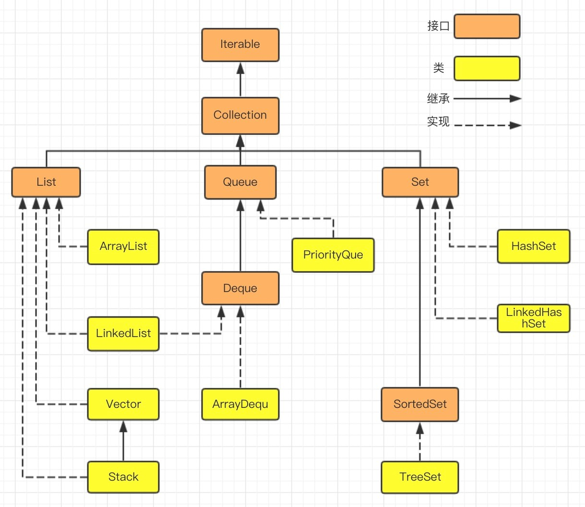
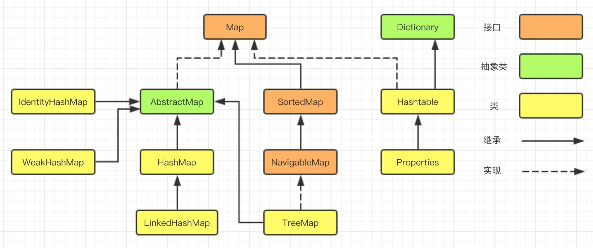
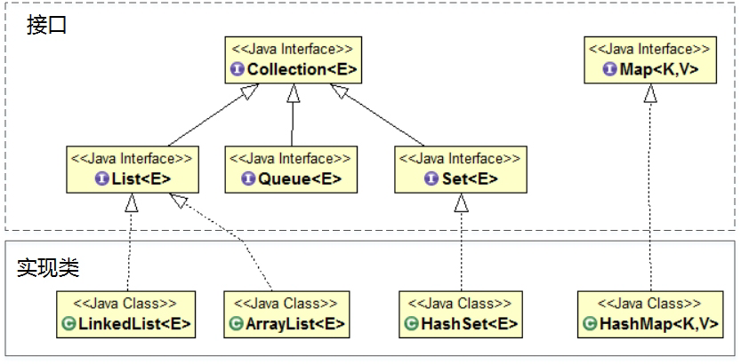
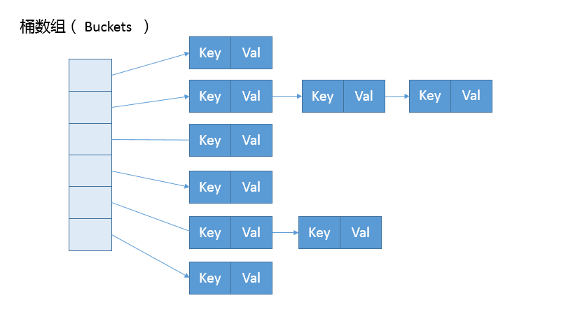

本文最后更新于：2020年7月25日 凌晨
文章主要归纳介绍 Java 的集合框架与设计结构。包括 Java 提供的主要集合类型（Collections 和 Map）及其对应的数据结构、算法，并考虑不同场景下的具体技术选择。
Java 集合框架设计结构
Java中提供了丰富的集合接口和类，它们来自于java.util包。Java集合类型分为：Collection和Map，Collection子接口有：Set、Queue和List等接口。每一种集合接口定义和描述了一种数据结构。
Collection 接口是所有集合的根，然后扩展开提供了三大类集合，分别是：
- List，有序集合，提供方便的访问、插入、删除等操作；
- Set，不允许重复元素，不存在两个对象 equals 返回 true。在需要保证元素唯一性的场景下使用较多；
- Queue/Deque，除了集合的基本功能，它还支持先入先出FIFO或后入先出LIFO等约束行为。并发包中有BlockingQueue。
Map允许按照某个键来访问元素。Map集合由两个集合构成：键集合，值集合。键集合是Set类型，不能有重复的元素。值集合是Collection类型，可以有重复的元素。
每种集合的通用逻辑，都被抽象到相应的抽象类之中，比如 AbstractList 就集中了各种 List 操作的通用部分。这些集合不是完全孤立的，例如LinkedList 实现了 List 和 Deque。


注：
- Iterator通用迭代器、ListIterator针对 List 特化的迭代器
- Comparator比较器、Comparable 排序接口
- Collections常用算法类、Arrays静态数组的排序、查找算法
Java 主要集合类型
重点关注常用的实现类，掌握对应的数据结构、算法，能够根据不同的场景，进行具体的技术选择。

List
Vector、ArrayList 和 LinkedList 实现了 List，是有序集合。都提供按照位置进行定位、添加或者删除的操作，提供迭代器以遍历其内容等。但因为具体的设计区别，在行为、性能、线程安全等方面，表现又有很大不同。
- Vector 是 Java 早期提供的线程安全的动态数组，内部使用对象数组来保存数据。如果不需要线程安全，并不建议选择，毕竟同步有额外开销。可以根据需要自动的增加容量，当数组已满时，会创建新的数组，并拷贝原有数组数据；
- ArrayList 的应用更加广泛，使用动态数组实现，不是线程安全的，所以性能要好很多。ArrayList 也可以根据需要调整容量，两者的调整逻辑有所区别，Vector 在扩容时会提高 1 倍，而 ArrayList 增加 50%；
- LinkedList 是 Java 提供的双向链表，不需要像上面两种那样调整容量，但是因为存在额外的前驱和后继节点指针，所以占用的内存比 ArrayList 多一些。任意位置的插入删除很方便，不支持随机取值，只能从一端开始遍历，直到找到查询的对象。它不是线程安全的。
Set
HashSet、LinkedHashSet 和 TreeSet 实现了Set。特点是元素不重复，存取无序。
- HashSet 以 HashMap 为基础实现。利用哈希算法，理想情况下添加、删除、包含等操作的时间复杂度为常数，它不保证有序。
- LinkedHashSet 内部构建了一个记录插入顺序的双向链表，因此提供了按照插入顺序进行遍历的能力，也保证常数时间的包含、添加、删除等操作，这些操作性能略低于 HashSet，因为需要维护链表的开销；
- TreeSet 默认利用 TreeMap 实现。支持自然顺序访问，包含、添加、删除、等操作相对低效（log(n) ）；
在遍历元素时，HashSet 性能受自身容量影响，所以初始化时，除非有必要，不然不要将其背后的 HashMap 容量设置过大。而对于 LinkedHashSet，由于其内部链表提供的方便，所以遍历性能只和元素多少有关系。
Map
Hashtable、HashMap、TreeMap 是最常见的 Map 的实现，以键值对的形式存储和操作数据的集合类型。
- Hashtable 是早期 Java 类库提供的一个哈希表实现，本身是同步的，不支持 null 键和值，由于同步导致的性能开销，所以已经很少被推荐使用；
- HashMap 应用更加广泛，利用哈希表实现。HashMap 不是同步的，支持 null 键和值等。通常情况下HashMap 的 put 或 get 操作的时间复杂度为常数。所以它是绝大部分利用键值对存取场景的首选，比如，实现一个用户 ID 和用户信息对应的运行时存储结构；
- 大部分使用 Map 的场景，通常就是放入、访问或者删除，对顺序没有特别要求，HashMap 在这种情况下基本是最好的选择。
- LinkedHashMap 继承于HashMap，是基于HashMap和双向链表来实现的。LinkedHashMap 是有序的，可分为插入顺序和访问顺序。如果是访问顺序，那put和get操作已存在的Entry时，都会把Entry移动到双向链表的表尾(其实是先删除再插入)，存取数据时和 HashMap 一样，使用 Entry[] 的方式，双向链表只是为了保证顺序。LinkedHashMap 不是线程安全的；
- 这种特点适用于一些特定应用场景，例如：构建一个空间占用敏感的资源池，可以自动将最不常被访问的对象释放。那么，表满时需要删除时候就是头部元素。
- TreeMap 是基于红黑树实现的一种按序访问的 Map，TreeMap能够把它保存的记录根据键进行排序，默认是按键值的升序排序，也可以指定排序的比较器，具体顺序可以由指定的 Comparator 决定。用 Iterator 遍历时，得到的记录是排过序的。它的 get、put、remove 操作的时间复杂度是 O(log(n))，所以TreeMap实际使用的比较少。
- TreeMap 和 LinkedHashMap 都可以保证某种顺序，但二者还是不同的。TreeMap 的整体顺序由键的顺序关系决定，即通过 Comparator 或 Comparable（自然顺序）决定。
哈希值
HashMap 的性能表现非常依赖于哈希值的有效性，需要掌握相关内容。
Java中equals和==的区别
- == 的作用：
- 基本类型：比较的就是值是否相同；
- 引用类型：比较的就是地址值是否相同
- equals() 的作用：
- 引用类型：默认情况下，比较的是地址值。但是一般来说，意义不大。所以，一些类库重写了这个方法，如String、Integer、Date。这些类当中 equals 有其自身的实现，一般是用来比较对象的成员变量值是否相同，而不再是比较类在堆内存中的存放地址了。
hashCode（）与 equals（）的相关规定
- 如果两个对象相等（equals 相等），那么 hashCode 一定相等；
- 两个对象相等，对两个对象分别调用 equals 方法都返回 true；
- 两个对象有相同的哈希值(hash code)，它们不一定相等；
- 因此，equals 方法被覆盖过，则 hashCode 方法也必须被覆盖，所以重写了 equals 也要重写 hashCode；
- equals 有对称、反射、传递等特性。
HashMap源码分析
掌握HashMap 设计与实现的基本原理与方法，对深入理解集合和数据结构有一些帮助。
- HashMap 内部实现基本点分析;
- 容量（capacity）和负载系数（load factor）;
- 树化 。
HashMap 内部的结构如下图，它可以看作是数组和链表结合组成的复合结构，数组被分为一个个桶，通过哈希值决定键值对在这个数组的寻址；哈希值相同的键值对，则以链表形式存储。需要注意的是，如果链表大小超过阈值（TREEIFY_THRESHOLD, 8），链表就会被改造为树形结构。

put方法
putVal 方法逻辑比较集中，从初始化、扩容到树化都和它有关，阅读源码时需要多加关注。
public V put(K key, V value) {
return putVal(hash(key), key, value, false, true);
}final V putVal(int hash, K key, V value, boolean onlyIfAbsent,
boolean evict) {
HashMap.Node<K,V>[] tab; HashMap.Node<K,V> p; int n, i;
if ((tab = table) == null || (n = tab.length) == 0)
n = (tab = resize()).length;
if ((p = tab[i = (n - 1) & hash]) == null)
tab[i] = newNode(hash, key, value, null);
else {
if (binCount >= TREEIFY_THRESHOLD - 1) // -1 for 1st
treeifyBin(tab, hash);
}
if (++size > threshold)
resize();
}如果表格是 null，resize 方法会初始化它；
resize 方法兼顾两个职责，创建初始存储表格，或者在容量不满足需求的时候，进行扩容resize；
在放置新的键值对的过程中，如果++size > threshold，就会发生扩容
具体键值对在哈希表中的位置（数组 index）取决于下面的位运算：
i = (n - 1) & hash
将高位数据移位到低位进行异或运算的原因是：有些数据计算出的哈希值差异主要在高位，而 HashMap 里的哈希寻址是忽略容量以上的高位的，这种处理可以有效避免类似情况下的哈希碰撞。
static final int hash(Object kye) {
int h;
return (key == null) ? 0 : (h = key.hashCode()) ^ (h >>>16;
}resize方法
final Node<K,V>[] resize() {
Node<K,V>[] oldTab = table;
int oldCap = (oldTab == null) ? 0 : oldTab.length;
int oldThr = threshold;
int newCap, newThr = 0;
if (oldCap > 0) {
if (oldCap >= MAXIMUM_CAPACITY) {
threshold = Integer.MAX_VALUE;
return oldTab;
}
else if ((newCap = oldCap << 1) < MAXIMUM_CAPACITY &&
oldCap >= DEFAULT_INITIAL_CAPACITY)
newThr = oldThr << 1; // double threshold
}
else if (oldThr > 0) // initial capacity was placed in threshold
newCap = oldThr;
else { // zero initial threshold signifies using defaults
newCap = DEFAULT_INITIAL_CAPACITY;
newThr = (int)(DEFAULT_LOAD_FACTOR * DEFAULT_INITIAL_CAPACITY);
}
if (newThr == 0) {
float ft = (float)newCap * loadFactor;
newThr = (newCap < MAXIMUM_CAPACITY && ft < (float)MAXIMUM_CAPACITY ?
(int)ft : Integer.MAX_VALUE);
}
threshold = newThr;
@SuppressWarnings({"rawtypes","unchecked"})
Node<K,V>[] newTab = (Node<K,V>[])new Node[newCap];
table = newTab;
if (oldTab != null) {
// ....
}
return newTab;- 不考虑极端情况，容量理论最大极限由 MAXIMUM_CAPACITY 指定，数值为 1<<30，也就是 2 的 30 次方；
- 门限值 = 负载因子 x 容量，如果构建 HashMap 的时候没有指定，那么依据相应的默认常量值；
- 门限通常以倍数进行调整 （newThr = oldThr << 1），当元素个数超过门限大小时，则调整 Map 大小；
- 扩容后，需要将老的数组中的元素重新放置到新的数组，这是扩容的一个主要开销来源。
容量、负载因子和树化
容量和负载系数决定了可用的桶的数量：
- 空桶太多会浪费空间；
- 可用空间较少则会严重影响操作的性能。
- 极端情况下，假设只有一个桶，就退化成了链表，操作的时间复杂度不能保证。
对于容量，如果能够知道 HashMap 要存取的键值对数量，可以考虑预先设置合适的容量大小。需要满足：
- 负载因子 * 容量 > 元素数量，所以预先设置的容量需要大于 “预估元素数量 / 负载因子”；
- 是 2 的幂数；
对于负载因子：
- 如果没有特别需求，不要轻易进行更改，因为 JDK 自身的默认负载因子是非常符合通用场景的需求的；
- 如果确实需要调整，建议不要设置超过 0.75 的数值，因为会显著增加冲突，降低 HashMap 的性能；
- 如果使用太小的负载因子，按照上面的公式，可能会导致频繁的扩容，增加无谓的开销，本身访问性能也会受影响。
树化的原因是主要是，在元素放置过程中，如果哈希冲突频繁发生，元素都被放置到同一个桶里，会形成一个比较长的链表，而链表查找的时间复杂度是线性的，严重影响存取性能。树化对应的逻辑主要在 putVal 和 treeifyBin方法。
final void treeifyBin(Node<K,V>[] tab, int hash) {
int n, index; Node<K,V> e;
if (tab == null || (n = tab.length) < MIN_TREEIFY_CAPACITY)
resize();
else if ((e = tab[index = (n - 1) & hash]) != null) {
//树化改造逻辑
}
}结合putVal 和 treeifyBin 这两个方法，可以看到，当 binCount 大于 TREEIFY_THRESHOLD 时：
- 如果容量小于 MIN_TREEIFY_CAPACITY，只会进行简单的扩容；
- 如果容量大于 MIN_TREEIFY_CAPACITY ，则会进行树化改造。
static final int TREEIFY_THRESHOLD = 8;
static final int UNTREEIFY_THRESHOLD = 6;Collections
java.util.Collections工具类为集合框架提供了很多有用的方法，这些方法都是静态的，在编程中可以直接调用。
默认排序算法
理解 Java 提供的默认排序算法的排序方式以及设计思路：需要区分是 Arrays.sort() 还是 Collections.sort()。对于小数据集，会直接进行二分插入排序。
- Arrays.sort() 对原始数据类型的数组，默认升序排序。如果要实现降序排列，需要借助比较器Comparator。
- 对于原始数据类型，目前使用的是所谓双轴快速排序（Dual-Pivot QuickSort），是一种改进的快速排序算法，早期版本是相对传统的快速排序；
- Collections.sort() 对对象数据类型的List 进行排序。
- 对于对象数据类型，目前则是使用TimSort，思想上也是一种归并和二分插入排序结合的优化排序算法。TimSort 的思路是查找数据集中已经排好序的分区，然后合并这些分区，达到排序的目的。
另外，Java 8 引入了并行排序算法（直接使用 parallelSort 方法），这是为了充分利用现代多核处理器的计算能力，底层实现基于 fork-join 框架，当处理的数据集比较小的时候，差距不明显，甚至还表现差一点；但是，当数据集增长到数万或百万以上时，提高就非常大了，具体还是取决于处理器和系统环境。
拓展
问：思考一个应用场景，实现一个云计算任务调度系统，可以保证 VIP 客户的任务被优先处理，可以利用哪些数据结构或者标准的集合类型呢？更进一步讲，类似场景大多是基于什么数据结构呢？
答：由于任务有前后顺序关系，所以考虑使用优先级队列，如PriorityQueue、PriorityBlockingQueue。将VIP用户的优先级设置为最高，优先处理。借鉴操作系统中的调度算法，还可以设计各种公平的优先级选择算法（基于排队先后顺序、调度任务所需的时间长短进行排序），与 PriorityQueue 结合使用。
消息队列可以对用户请求进行削锋，前台快速响应，后台后续进行处理操作。其他的优化有：利用分布式系统的优点，将VIP用户的请求分发到算力更高的服务器上处理。达到高可用的目的。
参考资料
Java 编程思想
Java 核心卷
本博客所有文章除特别声明外，均采用 CC BY-SA 4.0 协议 ，转载请注明出处！